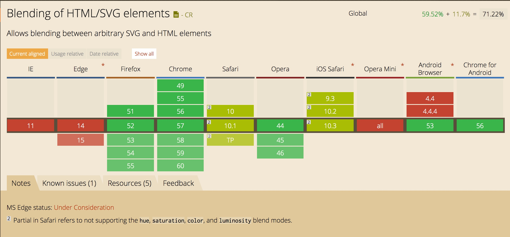
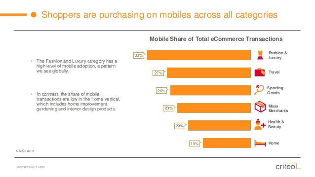

@una
@una
Images on the Web
The Problem: Understanding Why
The Medium: What's Coming Next
Solutions: Automatic to Manual
Example Time: Yay!

Irresponsible Imaging


Average load time for mobile sites is: 19 seconds over 3G
Mobile sites that loaded within 5 seconds vs 19 seconds were observed to have: 70% longer average sessions
53% of visits to mobile sites are abandoned after 3 seconds
As of 2014, India was the third-largest online market with more than 198 million internet users, ranked only behind China and the United States
statista.comNumber of internet users in India from 2014 to 2021 (in millions)


 Wikipedia
Wikipedia
Access to information should be a basic human right
Http Archive Data

66% Images
The average single JPG is 2.3x bigger than the average JavaScript file
Understanding Your Canvas
- ANI: Windows animated cursor file format
- BMP: Bitmap graphic files for Windows and OS/2
- CAL: Windows calendar files
- FAX: GFI fax image file
- GIF: CompuServe Graphics Interchange File
- IMG: Graphical Environment Manager (GEM) Image file
- JBG: (JBIG) Joint Bi-level Image experts Group file
- JPE: JPEG/JIFF Image file
- JPEG: JPEG bitmap graphic file
- JPG: JPEG/JIFF Image file
- MAC: MacPaint image file
- PBM: Portable BitMap image file
- PCD: Kodak Photo-CD image file
- PCX: RLE compressed ZSoft PC paintbrush bitmap file
- PCT: MacIntosh PICT image file
- PGM: Portable Greymap file
- PNG: Portable Network Graphics bitmap graphic file
- PPM: Portable Pixmap file
- PSD: Adobe Photoshop bitmap file
- RAS: Sun Raster image file
- TGA: Targa bitmap
- TIFF: Tag Image File Format bitmap file
- WMF: Windows Meta File
üå≤üå≥üå¥
Happy? Little Trees

gif
9 kB
png
19 kB

jpeg
41 kB

svg
7 kB
Happy? Little Trees
gif
109 kB

png
308 kB

jpeg
103 kB

svg
138 kB
GIF
PNG
JPG
WEBP
BPG
FLIF
GIF
- 8-bit (256 Colors)
- Dithering Control
(32, 64, 128)

Gif Dithering


GIF
- 8-bit (256 Colors)
- Dithering Control
(32, 64, 128)
PNG üíÅ
- PNG-8 (256 Colors)
- PNG-24 (True Color)
- Alpha Transparency
- Delta Encoding
Lossless v. Lossy
PNG
JPG

Guetzli Compression

100%
264 KB

60%
199 KB

10%
56 KB
100%
264 KB

10%
56 KB
80% quality
JPEG 2000
- Multiple resolution representation
- Lossy or lossless
- Supports any bit depth, (i.e 16- and 32-bit floating point)
JPEG XR
- Lossy or lossless
- Tile region and metadata support
- 16-bit per component (64-bit per pixel) CMYK color model
- Alpha channel support
According to jpeg.org:
- JPEG
- JPEG XT
- JPEG-LS
- JPEG 2000
- JPEG XR
- JBIG
- JPEG XS
JPEG 2000

JPEG XR

IE/Edge: JPEG XR
Safari: JPEG 2000
Chrome: WEBP
Welcome to the web in 2017 ✨
WebP
- Lossy or Lossless
- Animated format support
- Better compression algorithm than JPG
JPG 168 KB

WEBP 141 KB

WebP
Converting to WebP
| Name | Platform | Note |
|---|---|---|
| Picasa | Windows, Mac | You probably know Google's Image Management Suite, and you probably guessed that it supports WEBP conversion. |
| ImageMagick | Windows, Mac, Linux, Others | Comes in command line form but there are several GUI front ends that are available. |
| XnConvert | Windows, Mac, Linux, Others | My free Converter of choice; simple, multiplatform, and a delight to use |
| XNView | Windows, Mac, Linux, Others | One of the world's best freeware image viewing programs, supports WEBP, can do conversions. |
| NConvert | Windows, Mac, Linux, Others | Command line utility from the makers of XNConvert and XNView. |
| FastPictureViewer | Windows | An image viewer that can open WEBP if you install the aforementioned WEBP codec, and supports saving images into other formats. Note that the 'standard' version is free; simply let the PRO version expire and it will revert to the free version. |
| IrfanView | Windows | This extremely well known and versatile freeware image viewer for Windows supports viewing and converting WEBP. |
| GIMP | Windows, Mac, Linux, Others | The world's most well known free/open source bitmap editor and Photoshop alternative, supports and can convert WEBP |
| Paint.NET | Windows, Mac, Linux, Others | The world's SECOND most well known free/open source bitmap editor and Photoshop alternative, supports and can convert WEBP (although you may need to install this plugin). |
| RWPaint | Windows | Despite the heavy hitter free Photoshop alternatives above, this program is my favorite bitmap editor and the one I use. Supports and can convert WEBP |
| WebP Utility | Windows | A small program from Google that can do WEBP conversion from the command line. |
| Cloudconvert.org | Online | Online conversion service, can convert WEBP. |
| Online-convert.com | Online | Online conversion service, can convert WEBP. |
| Zamzar.com | Online | Online conversion service, can convert WEBP. |
- Install Homebrew
brew install imagemagickbrew install webp
mogrify -format webp *.jpg
WebP Polyfill: 67kb
< script type="text/javascript" src="https://cdn.jsdelivr.net/webpjs/0.0.2/webpjs-0.0.2.min.js">
✨ Picture Element ✨
<picture>
<source type="image/webp"
srcset="img/happy-tree.webp">
<img src="img/happy-tree.jpg"
alt="happy little tree">
</picture>

WebM


mp4: 3.5 MB
webm: 1.3 MB
<video>
<source src="src/video.mp4"
type='video.mp4;
codecs="avc1.42E01E, mp4a.40.2"'/>
<source src="src/video.webm"
type='video.webm;
codecs="vp8, vorbis"'/>
</video>More Options,
More Power
Experimental Formats
BPG (Better Portable Graphics)
Tests on photographic images in July 2014 found that BPG produced smaller files for a given quality than JPEG, JPEG XR and WebP
Using BPG
- Encoding: BPG Web Encoder
- Decoding (Polyfill): BGP to JPEG converter (56 KB)
Free Lossless Image Format (FLIF)

Free Lossless Image Format
- 14% smaller than lossless WebP
- 22% smaller than lossless BPG
- 33% smaller than brute-force crushed PNG files
- 43% smaller than typical PNG files
- 46% smaller than optimized Adam7-interlaced PNG files
- 53% smaller than lossless JPEG 2000 compression
- 74% smaller than lossless JPEG XR compression

Responsive Images
Polyfill status: "Beta. Not tested on all browsers. Performance and size is still being optimised."
Solutions and Protips

ImageMagick
- Webpack: magick-loader
- Gulp: gulp-gm
- Grunt: grunt-imagemagick
- NPM Scripts: node-imagemagick
node-imagemagick
fs.writeFileSync('after.png', imagemagick.convert({
srcData: fs.readFileSync('before.jpg'),
format: 'PNG',
quality: 100 // (best) to 1 (worst)
}));
ImageAlpha

ImageOptim
ImageOptim Always and Often.
IOAO
SVGOMG
Spot the Difference!
409 KB
264 KB
409 KB

0.533 KB
0.533 KB
Facebook Headers: 200 bytes
Source Baseline JPEG
Baseline JPEG Progressive JPEG
Progressive JPEGProtip: Embrace Blur

920 KB

730 KB
una.im/CSSgram
Toaster
Brannan
Walden
.color-me
Mix Blend Mode
Background Blend

Warning: this study is inherently bias and has a small sample size

920 KB
730 KB
845 KB
Warning: this study is also inherently bias and has a small sample size
Protip: Less Colors, Less Problems
Compressive Images
Filament Group
123 KB
 106 KB
106 KBProtip: Try Compressive Images
"If you have to send a loading indicator, you're not optimizing your images enough"
Animated Images
Protip: Format the Frames
GIF Alternatives
- APNG
- FLIF
- BPG
- MNG
GIFV by Imgur
GIFV Introduction(Silent) Video Autoplay is back in iOS 10!
Compression
Intraframe (gif)
Interframe (vids)

Now We Paint
Step 1: Determine GCD Image Size


mogrify ./ -resize 50%
"Save Retina Images @2x the Size"
195% improvement in Image Sizes
1.1 MB to 500 KB
220% Savings in Image Sizes
Step 2: Consider Image Format
JPG: 500 KB
WEBP: 348 KB
316% Savings in Image Sizes
Step 3: Choose the Best Image Quality
<picture>
<source
media="(min-width: 800px)"
srcset="images/tree@2x.png">
<source
media="(min-width: 400px)"
srcset="images/tree.png">
<img
src="images/tree@sm.png"
alt="a happy little tree">
</picture>
Step 4: Profit! (Like, Literally)
Image Optimization Tips:
- Probably don't send an image larger than it needs to be
- Be aware of emerging image formats (pros/cons)
<picture>is your friend!- Compress your smaller images to low qualities
- Always run all images through an optimizer
- Small improvements are still improvements
- Educate the entire team

Build a better web
Thank You üíï @una
- Google Mobile Perf Study Results
- Progressive Rendering
- Putting your Images on a Diet
- WebP Documentation
- Video on WEBP
- Deep Color
- CSS Color Level 4
- FLIF Format
- Comparing File Formats
- Introducing GIFV
- Social Media Sizes Cheat Sheet
- "Blur-Up" Technique
- Medium's Image Loading Technique
- Intrinsic Placeholders
- iOS Video Autoplay News
- Facebook Image Loading Technique
- Picturefill
- Guetzli Compression